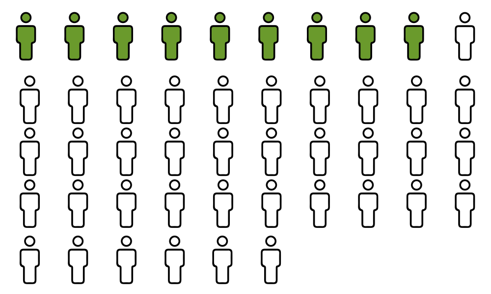

Forty-five years ago, on May 18, 1972, a small team of young lawyers worked late to prepare a petition to represent a child victim of abuse, F.A. They succeeded, and in 1975 a child's right to counsel became law in Pennsylvania. Through the efforts of those young lawyers, the Support Center for Child Advocates was incorporated on February 1, 1977.
"Forty years is a big milestone for any non-profit," said Moira Mulroney, director of development and communications at the Support Center for Child Advocates. "We wanted to leverage it to increase funds and increase awareness."
The Support Center for Child Advocates recently moved to its fourth office in forty years, and launched the celebration of the fortieth anniversary with an open house event in January. More recently, the agency held its Annual Benefit Reception and Auction in the Crystal Tea Room of the Wanamaker Building on April 19. Included in the festivities were a ceremony honoring forty of the organization's volunteers and influencers, as well as the presentation of the organization's first Andi Broad Distinguished Client Award, named for former board member Andrea Broad who passed away on February 23, 2017.
"It brought back a lot of memories for people," said Cate Galbally, the Support Center for Child Advocates' development officer, of the event. "It was an exciting way to reconnect with people... it reengaged our founders." Many of whom, she added, have moved on to different cities since the center was created. "For a lot of them, they lost touch a little bit. And this has been a special time for them."
"Forty years ago, these were kids - these were twenty-somethings. They were a couple years out of law school and they decided they were going to change the world. And they did," said Mulroney. "To me it just blows my mind that a bunch of 25-year-old kids made this happen."
The center is also developing a "Young Friends" group to draw the support and volunteerism of the very type of young professionals who started it all.
Director of Social Work Tracey Thomasey related some challenges of the Support Center for Child Advocates' social work department, and how the environment has changed over time. She heard first-hand accounts from the agency's earliest volunteers and employees at a Founders' Dinner event which preceded the Annual Benefit Reception. "Forty years ago, there was no process. There was no procedure. It was all ad hoc. And people were literally flying by the seat of their pants to figure out how to represent kids."
"In the systems and procedures and rules that we have now established, that is just terrifying," said Thomasey. "And it's hard to believe that it was only 40 years ago where there was nothing."
Thomasey began working in child advocacy in 1998 and has been with the Support Center for Child Advocates since 2000. She identified a major shift that began early on in her involvement with child advocacy: The Adoption and Safe Families Act, which pushed advocates to work toward permanency for their child clients. According to Thomasey, that federal law, which passed in 1997, has led to a visible change in outcomes during her career at the Support Center for Child Advocates. "When I got here, my caseload was all teenagers who had been in foster care their entire lives. And that's not what our cases look like now."
In Pennsylvania, the number of substantiated reports of child abuse and neglect increased very slightly in 2016, to 1.7 substantiated reports per 1000 children from 1.6 in 2015. The state received reports from 46,196 reporters, and ChildLine, its toll-free child abuse hotline, received 166,971 calls over the year.
Seeking permanency means that more cases can be closed with children in safe, stable homes. "The best outcome is not ever being back in the system," Thomasey said.
Thomasey observed that in recent years, the Support Center for Child Advocates has grown significantly. "I think we're a lot bigger than anyone conceived of us becoming. And we have to do some adjusting to that."
For the Support Center for Child Advocates, growth means being able to increase the number of cases handled. That means helping more children to find positive outcomes and live lives free of abuse and neglect.
The agency's ability to help is also limited to the availability of volunteer attorneys, over 300 of whom provide the legal counsel made possible by the efforts of the Support Center for Child Advocates' founders in the F.A. case. "In our growth, our volunteer base hasn't grown despite a lot of efforts," Thomasey noted. "It does make one wonder whether perhaps we've reached that plateau, that cap on what the number is that is sustainable for volunteers doing this work in Philadelphia, and what that means to us, as an agency, when that doesn't meet the needs of all our clients. With that always comes a focus on recruitment and retention of volunteers."
A lot can change in forty years, but the goal of the Support Center has remained steady: change the story for child victims of abuse and neglect. "The mission is so pure. And it's so important to all of us, here," said Mulroney.
Pennsylvania's distribution of maltreatment types is wildly different from the national average. This could be due in part to Pennsylvania's low referral rates, meaning that fewer reports are generated per 1,000 children living in the state.
To compare Pennsylvania's referral rate to that of other states, continue to "A Look at the Country."
With these differences illustrated, it's clear that state and local efforts are critical to making progress in child safety.
The Pennsylvania Department of Human Resources reported in their 2016 Child Protective Services Report that 46 children in Pennsylvania died as a result of abuse and neglect. Each icon represents one child.
9 of those deaths occurred in Philadelphia County, shown using green icons.
The most recent outcomes data available from the Support Center for Child Advocates comes from 2014. In that year the agency represented 928 clients and closed 250 cases.
As Tracey Thomasey stated in "An Important Anniversary," the Support Center for Child Advocates has grown drastically in recent years - since she joined the organization in 2000, the staff has doubled in size and the number of cases handled has grown at a similar rate.
Note that figures refer to fiscal years, and that while staffing numbers are available for the agency's first three years it is unknown how many cases were handled in those years.
Referral Rate: Pennsylvania is one of 7 states which did not report a referral rate.
Victimization Rate: 1.43 of every 1,000 children were victims of abuse and neglect.
Fatality Rate: 1.26 per 100,000 children died as a result of abuse and neglect.
Pennsylvania's victimization rate was the lowest of all states, but this may have been caused by low referral rates.
Referral Rate: The state received 20 referrals for every 1,000 children.
Victimization Rate: 7.67 of every 1,000 children were victims of abuse and neglect.
Fatality Rate: 1.18 per 100,000 children died as a result of abuse and neglect.
Alabama had the lowest referral rate of all reporting states. 7 states did not report this figure.
Referral Rate: The state received 80.13 referrals for every 1,000 children.
Victimization Rate: 15.56 of every 1,000 children were victims of abuse and neglect.
Fatality Rate: 2.68 per 100,000 children died as a result of abuse and neglect.
Referral Rate: The state received 37.96 referrals for every 1,000 children.
Victimization Rate: 7.37 of every 1,000 children were victims of abuse and neglect.
Fatality Rate: 3.14 per 100,000 children died as a result of abuse and neglect.
Referral Rate: The state received 74.07 referrals for every 1,000 children.
Victimization Rate: 13.05 of every 1,000 children were victims of abuse and neglect.
Fatality Rate: 5.67 per 100,000 children died as a result of abuse and neglect.
Arkansas had the highest fatality rate of all reporting states. 3 states did not report this figure.
Referral Rate: The state received 41.64 referrals for every 1,000 children.
Victimization Rate: 7.89 of every 1,000 children were victims of abuse and neglect.
Fatality Rate: 1.34 per 100,000 children died as a result of abuse and neglect.
Referral Rate: The state received 64.7 referrals for every 1,000 children.
Victimization Rate: 8.03 of every 1,000 children were victims of abuse and neglect.
Fatality Rate: 1.51 per 100,000 children died as a result of abuse and neglect.
Referral Rate: The state received 51.46 referrals for every 1,000 children.
Victimization Rate: 9.12 of every 1,000 children were victims of abuse and neglect.
Fatality Rate: 1.44 per 100,000 children died as a result of abuse and neglect.
Referral Rate: The state received 90.07 referrals for every 1,000 children.
Victimization Rate: 7.52 of every 1,000 children were victims of abuse and neglect.
Fatality Rate: 0.49 per 100,000 children died as a result of abuse and neglect.
Referral Rate: The district receives 124.24 referrals for every 1,000 children.
Victimization Rate: 11.41 of every 1,000 children were victims of abuse and neglect.
Fatality Rate: 2.54 per 100,000 children died as a result of abuse and neglect.
Referral Rate: The state received 53.08 referrals for every 1,000 children.
Victimization Rate: 10.66 of every 1,000 children were victims of abuse and neglect.
Fatality Rate: 3.02 per 100,000 children died as a result of abuse and neglect.
Referral Rate: The state received 43.41 referrals for every 1,000 children.
Victimization Rate: 10.76 of every 1,000 children were victims of abuse and neglect.
Fatality Rate: 4.51 per 100,000 children died as a result of abuse and neglect.
Referral Rate: Hawaii is one of 7 states which did not report a referral rate.
Victimization Rate: 4.85 of every 1,000 children were victims of abuse and neglect.
Fatality Rate: 1.29 per 100,000 children died as a result of abuse and neglect.
Referral Rate: The state received 45.48 referrals for every 1,000 children.
Victimization Rate: 3.75 of every 1,000 children were victims of abuse and neglect.
Fatality Rate: 1.39 per 100,000 children died as a result of abuse and neglect.
Referral Rate: Illinois is one of 7 states which did not report a referral rate.
Victimization Rate: 10.14 of every 1,000 children were victims of abuse and neglect.
Fatality Rate: 2.6 per 100,000 children died as a result of abuse and neglect.
Referral Rate: The state received 111.88 referrals for every 1,000 children.
Victimization Rate: 16.71 of every 1,000 children were victims of abuse and neglect.
Fatality Rate: 2.15 per 100,000 children died as a result of abuse and neglect.
Referral Rate: The state received 65.17 referrals for every 1,000 children.
Victimization Rate: 10.81 of every 1,000 children were victims of abuse and neglect.
Fatality Rate: 1.65 per 100,000 children died as a result of abuse and neglect.
Referral Rate: The state received 53.52 referrals for every 1,000 children.
Victimization Rate: 2.77 of every 1,000 children were victims of abuse and neglect.
Fatality Rate: 1.11 per 100,000 children died as a result of abuse and neglect.
Referral Rate: The state received 99.93 referrals for every 1,000 children.
Victimization Rate: 18.68 of every 1,000 children were victims of abuse and neglect.
Fatality Rate: 1.58 per 100,000 children died as a result of abuse and neglect.
Referral Rate: The state received 41.26 referrals for every 1,000 children.
Victimization Rate: 11.33 of every 1,000 children were victims of abuse and neglect.
Fatality Rate: 3.5 per 100,000 children died as a result of abuse and neglect.
Referral Rate: The state received 64.24 referrals for every 1,000 children.
Victimization Rate: 13.15 of every 1,000 children were victims of abuse and neglect.
Fatality Rate: Maine is one of 3 states which did not report a fatality rate.
Referral Rate: The state received 38.09 referrals for every 1,000 children.
Victimization Rate: 5.04 of every 1,000 children were victims of abuse and neglect.
Fatality Rate: 2.08 per 100,000 children died as a result of abuse and neglect.
Referral Rate: The state received 57.99 referrals for every 1,000 children.
Victimization Rate: 22.41 of every 1,000 children were victims of abuse and neglect.
Fatality Rate: Massachusetts is one of 3 states which did not report a fatality rate.
Massachusetts had the highest victimization rate of all states.
Referral Rate: The state received 67.55 referrals for every 1,000 children.
Victimization Rate: 15.73 of every 1,000 children were victims of abuse and neglect.
Fatality Rate: 3.76 per 100,000 children died as a result of abuse and neglect.
Referral Rate: The state received 59.78 referrals for every 1,000 children.
Victimization Rate: 3.99 of every 1,000 children were victims of abuse and neglect.
Fatality Rate: 1.32 per 100,000 children died as a result of abuse and neglect.
Referral Rate: The state received 40.96 referrals for every 1,000 children.
Victimization Rate: 12.01 of every 1,000 children were victims of abuse and neglect.
Fatality Rate: 4.82 per 100,000 children died as a result of abuse and neglect.
Referral Rate: The state received 60.23 referrals for every 1,000 children.
Victimization Rate: 4.1 of every 1,000 children were victims of abuse and neglect.
Fatality Rate: 2.52 per 100,000 children died as a result of abuse and neglect.
Referral Rate: The state received 72.92 referrals for every 1,000 children.
Victimization Rate: 8.25 of every 1,000 children were victims of abuse and neglect.
Fatality Rate: 0.88 per 100,000 children died as a result of abuse and neglect.
Referral Rate: The state received 68.18 referrals for every 1,000 children.
Victimization Rate: 7.41 of every 1,000 children were victims of abuse and neglect.
Fatality Rate: 0.64 per 100,000 children died as a result of abuse and neglect.
Referral Rate: The state received 49.52 referrals for every 1,000 children.
Victimization Rate: 7.4 of every 1,000 children were victims of abuse and neglect.
Fatality Rate: 1.94 per 100,000 children died as a result of abuse and neglect.
Referral Rate: The state received 55.2 referrals for every 1,000 children.
Victimization Rate: 2.82 of every 1,000 children were victims of abuse and neglect.
Fatality Rate: 1.52 per 100,000 children died as a result of abuse and neglect.
Referral Rate: New Jersey is one of 7 states which did not report a referral rate.
Victimization Rate: 4.85 of every 1,000 children were victims of abuse and neglect.
Fatality Rate: 1.15 per 100,000 children died as a result of abuse and neglect.
Referral Rate: The state received 82.22 referrals for every 1,000 children.
Victimization Rate: 17.51 of every 1,000 children were victims of abuse and neglect.
Fatality Rate: 2.82 per 100,000 children died as a result of abuse and neglect.
Referral Rate: New York is one of 7 states which did not report a referral rate.
Victimization Rate: 15.83 of every 1,000 children were victims of abuse and neglect.
Fatality Rate: 2.56 per 100,000 children died as a result of abuse and neglect.
Referral Rate: North Carolina is one of 7 states which did not report a referral rate.
Victimization Rate: 3.43 of every 1,000 children were victims of abuse and neglect.
Fatality Rate: North Carolina is one of 3 states which did not report a fatality rate.
Referral Rate: North Dakota is one of 7 states which did not report a referral rate.
Victimization Rate: 10.12 of every 1,000 children were victims of abuse and neglect.
Fatality Rate: 1.72 per 100,000 children died as a result of abuse and neglect.
Referral Rate: The state received 65.61 referrals for every 1,000 children.
Victimization Rate: 8.75 of every 1,000 children were victims of abuse and neglect.
Fatality Rate: 2.82 per 100,000 children died as a result of abuse and neglect.
Referral Rate: The state received 82.33 referrals for every 1,000 children.
Victimization Rate: 15.03 of every 1,000 children were victims of abuse and neglect.
Fatality Rate: 3.22 per 100,000 children died as a result of abuse and neglect.
Referral Rate: The state received 76.61 referrals for every 1,000 children.
Victimization Rate: 12.09 of every 1,000 children were victims of abuse and neglect.
Fatality Rate: 3.13 per 100,000 children died as a result of abuse and neglect.
Referral Rate: The state received 61.81 referrals for every 1,000 children.
Victimization Rate: 15.08 of every 1,000 children were victims of abuse and neglect.
Fatality Rate: 0 per 100,000 children died as a result of abuse and neglect.
Rhode Island was the only reporting state to achieve 0 fatalities due to abuse or neglect in 2015. 3 states did not report this figure.
Referral Rate: The state received 30.63 referrals for every 1,000 children.
Victimization Rate: 13.61 of every 1,000 children were victims of abuse and neglect.
Fatality Rate: 2.11 per 100,000 children died as a result of abuse and neglect.
Referral Rate: The state received 74.76 referrals for every 1,000 children.
Victimization Rate: 5.08 of every 1,000 children were victims of abuse and neglect.
Fatality Rate: 5.21 per 100,000 children died as a result of abuse and neglect.
Referral Rate: The state received 76.73 referrals for every 1,000 children.
Victimization Rate: 7.59 of every 1,000 children were victims of abuse and neglect.
Fatality Rate: 2.14 per 100,000 children died as a result of abuse and neglect.
Referral Rate: The state received 31.96 referrals for every 1,000 children.
Victimization Rate: 8.84 of every 1,000 children were victims of abuse and neglect.
Fatality Rate: 2.25 per 100,000 children died as a result of abuse and neglect.
Referral Rate: The state received 42.93 referrals for every 1,000 children.
Victimization Rate: 10.49 of every 1,000 children were victims of abuse and neglect.
Fatality Rate: 0.66 per 100,000 children died as a result of abuse and neglect.
Referral Rate: The state received 156.13 referrals for every 1,000 children.
Victimization Rate: 7.68 of every 1,000 children were victims of abuse and neglect.
Fatality Rate: 2.50 per 100,000 children died as a result of abuse and neglect.
Vermont had the highest referral rate of all reporting states. 7 states did not report this figure.
Referral Rate: The state received 38.65 referrals for every 1,000 children.
Victimization Rate: 3.27 of every 1,000 children were victims of abuse and neglect.
Fatality Rate: 2.89 per 100,000 children died as a result of abuse and neglect.
Referral Rate: The state received 58.77 referrals for every 1,000 children.
Victimization Rate: 3.66 of every 1,000 children were victims of abuse and neglect.
Fatality Rate: 1.68 per 100,000 children died as a result of abuse and neglect.
Referral Rate: The state received 99.11 referrals for every 1,000 children.
Victimization Rate: 12.80 of every 1,000 children were victims of abuse and neglect.
Fatality Rate: 2.37 per 100,000 children died as a result of abuse and neglect.
Referral Rate: The state received 59.86 referrals for every 1,000 children.
Victimization Rate: 3.74 of every 1,000 children were victims of abuse and neglect.
Fatality Rate: 1.31 per 100,000 children died as a result of abuse and neglect.
Referral Rate: The state received 48.91 referrals for every 1,000 children.
Victimization Rate: 6.97 of every 1,000 children were victims of abuse and neglect.
Fatality Rate: 1.44 per 100,000 children died as a result of abuse and neglect.